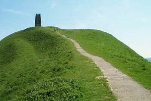

Website design and production by
A West Web Design
Bed and Breakfast Accommodation

Glastonbury Tor
Glastonbury Tor
- Lower Farm, Lottisham is a working farm offering bed and breakfast
accommodation in an ideal location for touring the many attractions of Somerset.
Only 3 miles from the Royal Bath and West showground
- Situated in a new barn conversion, the spacious rooms retain
traditional charm together with quality furnishings and decor
- Available for single nights or longer stays. Bed and
breakfast accommodation with flexibility, privacy and excellent value
for money
- AA 4 star award for B&B. Visit Britain 4 star award for farmhouse accommodation